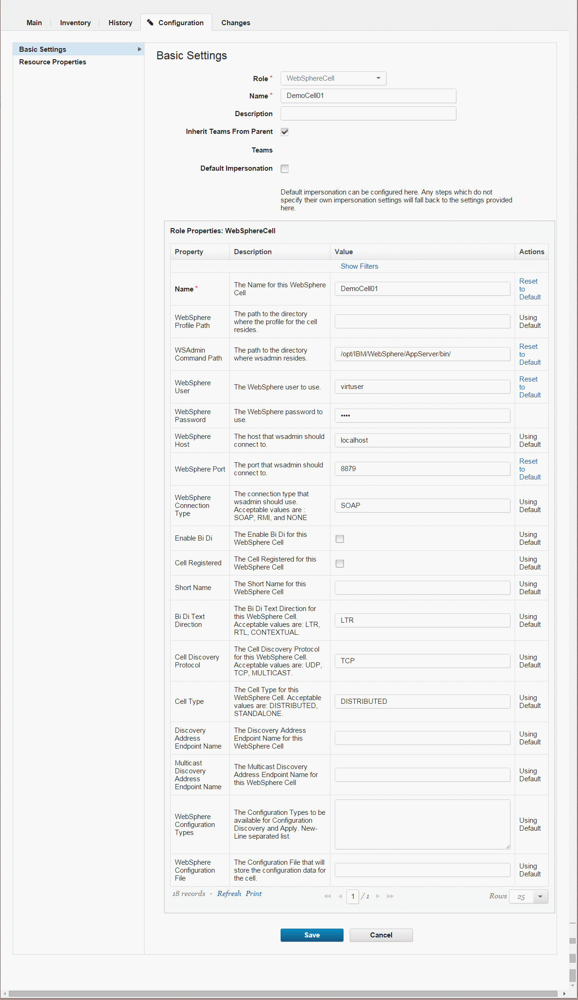
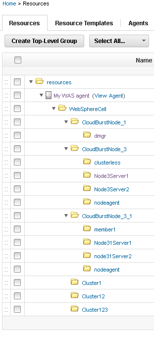

Importing resources from WebSphere Application Server
Use the WebSphere® Application Server - Deploy plug-in to import information about an IBM® WebSphere Application Server system into a collection of resources. Typically, importing information by using the plug-in takes less time than manually creating resources to match the IBM WebSphere Application Server.
- Install the WebSphere Application Server - Deploy plug-in. To download plug-ins, see the IBM UrbanCode™ Developer Center. Use the most recent version of the plug-in.
- Create a top-level resource group to contain agents. See Creating groups.
- Install an agent on the WebSphere Application Server system and add the agent as an agent resource under the top-level resource group.
Plug-ins can be developed and updated more frequently than HCL® UrbanCode™ Deploy provides release cycles. For the latest version of the WebSphere Application Server - Deploy plug-in and the latest documentation, see the IBM UrbanCode Deploy Plug-ins site.
- On the HCL UrbanCode Deploy server, click Resources to view the Resource Tree page.
-
If the wsadmin file is in a different location than one of the default locations, specify the file location as the value of the wsadmin.path property on the agent resource.
The default location of the wsadmin file on Linux™ is /opt/IBM/WebSphere/AppServer/bin/wsadmin.sh. The default locations on Microsoft™ Windows™ are C:\IBM\WebSphere\AppServer\bin\wsadmin.bat and C:\Program Files\IBM\WebSphere\AppServer\bin\wsadmin.bat.
-
Click the Actions push button that is associated with the top-level group, and then click Add Agent.
- In the Create Resource window, select the agent and then click Save. The new agent resource is displayed in the resource tree. Eventually, another resource is displayed under the agent resource. This resource is named
WebSphereCelland represents the WebSphere Application Server cell. You might need to click Refresh to see the cell resource, and it can take several minutes for the cell resource to be displayed. - Click the WebSphere Application Server cell resource and then click Configuration > Basic Settings. The cell resource has the
WebSphereCellrole, which includes several properties that are related to the cell. -
In the section that is labeled Role Properties for the
WebSphereCellrole, specify the connection information for the cell, including the locations of the profile and wsadmin file and the user name and password for the WebSphere Application Server system, as in the following figure:
-
Click Save.
- On the Resources page, click the Actions push button that is associated with the cell resource, and then click Configure using WebSphere Topology Discovery. The discovery step runs. This step might take several minutes. A log is displayed to show progress.
- When the discovery process completes, close the log window, and then refresh the resource tree.
Resources that represent the WebSphere Application Server components are displayed in the resource tree. These new resources are displayed under the agent resource that you used to import the WebSphere Application Server components. Each node, cluster, and server has a matching resource. The following figure shows resources that represent a WebSphere Application Server system with three nodes:

Add these resources to an environment by opening the Resources page for the environment and then clicking Add Base Resources.
Parent topic: Resources